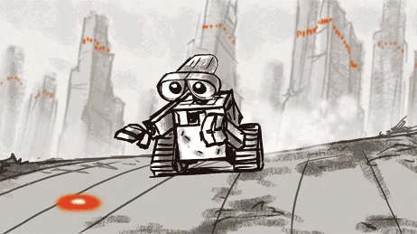

Welcome to my Final Project!
Through exploring this website, you will learn why I am interested in animation, who some of my favorite animators to watch are, as well as some history behind it.
Why Did I Choose Animation as my Website Topic?
Animation has been one of my favorite hobbies for a long time. When I was younger, I made lots of flipbooks and grew up watching the animation content on YouTube. This year, I took a class called IB Film and we had the chance to speak with an animator from the movie Wall-E, and it made me even more interested in the topic.
